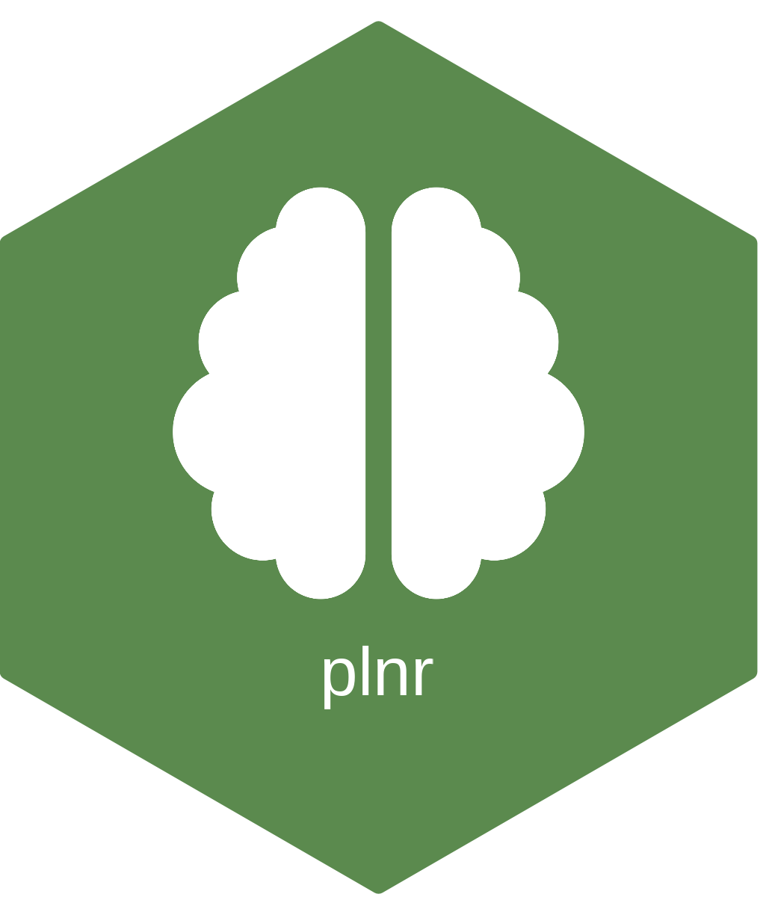

Case study: weekly surveillance over many registries
Richard Aubrey White
Source:vignettes/articles/case-study.Rmd
case-study.RmdA ministry of health holds many registries, with different formats, owners and delivery schedules. Surveillance runs the same analysis on all of them every week. This case study shows a structure in three layers for this work. The Norwegian Institute of Public Health/Folkehelseinstituttet (NIPH/FHI) uses a version of it for its weekly respiratory surveillance.
In this case study, “registry” means any source of surveillance data. That includes a sentinel system and a notification system.
The structure
| Layer | Holds | Owner | Part |
|---|---|---|---|
| Registry packages | One package for each registry. It reads the raw data and returns a table that follows the data contract. | The registry team | 1. A contract for each registry |
| Methods packages | The surveillance methods: nowcasting, trends and intensity levels. They read tables that follow the data contract. | The methods team | 2. The methods are in packages |
| The pipeline | One plnr plan. It runs the methods on every indicator of every registry. Later plans make the tables, figures and report. | The surveillance team | 3. One pipeline over every registry |
What the structure does
-
A new registry needs one package and one
add_data()call. The package returns a table that follows the contract. The pipeline reads the indicators and locations from the data. - A method change applies to every indicator. The next run uses the changed method for every indicator of every registry, with no change to the pipeline.
- Data that breaks the contract stops the run before the report. The pipeline checks the contract each time it loads a registry. The error names the registry and every rule it breaks.
- Each team works on its own layer. The registry team works on its raw format only. The methods team works on tables that follow the contract only.
- One results format. The analysis of every indicator returns the same columns, so one table and one figure show every registry.
Why one contract
Without a shared format, each method needs code for the format of each registry. With a contract, the code needs one function for each registry and one for each method.
In production at NIPH/FHI
NIPH/FHI runs its weekly respiratory surveillance analysis on a version of this structure. The results go into the weekly status reports on covid-19, influenza and other respiratory infections. The code started in November 2023.
The pipeline uses 6 types of surveillance data from 7 registries. It uses an eighth registry when the newest hospital extract has it.
| Type of data | Registries |
|---|---|
| Consultations in general practice and emergency primary care | NorSySS |
| Outbreak notifications from health institutions | VESUV |
| Sentinel laboratory testing, tests and positive tests by pathogen | Fyrtårn |
| Laboratory-confirmed cases | Two registries: cases outside hospital, cases in hospital |
| Hospital admissions with severe acute respiratory infection (SARI) | Two registries: all SARI admissions, and laboratory-positive SARI admissions when the extract has them |
| Deaths | The Norwegian Cause of Death Registry |
The registries arrive as delimited text files, Excel workbooks and R data files. Some give counts, and some give tests and positive tests. Some give the date each count was reported, and some do not. Each type of data gives one or more indicators, for example influenza and RSV from the laboratory.
At NIPH/FHI, the code that reads each registry is one function in the pipeline code. This case study puts each function in its own registry package. The team that owns a registry then also owns the code that reads it.
NIPH/FHI’s methods are in the methods package csalert, which part 2 runs.
The three parts run on synthetic data. The code on each page runs as written, and the page shows its output.
The case study
- Overview: weekly surveillance over many registries
- Part 1: a contract for each registry
- Part 2: the methods are in packages
- Part 3: one pipeline over every registry